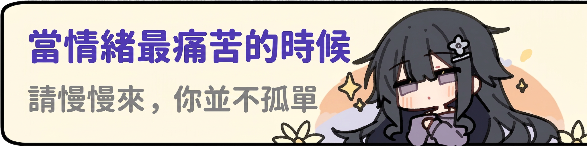
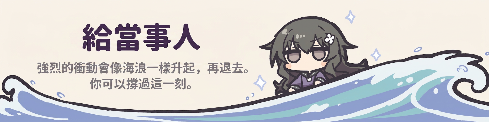
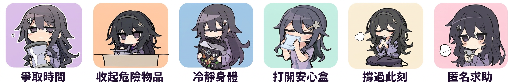
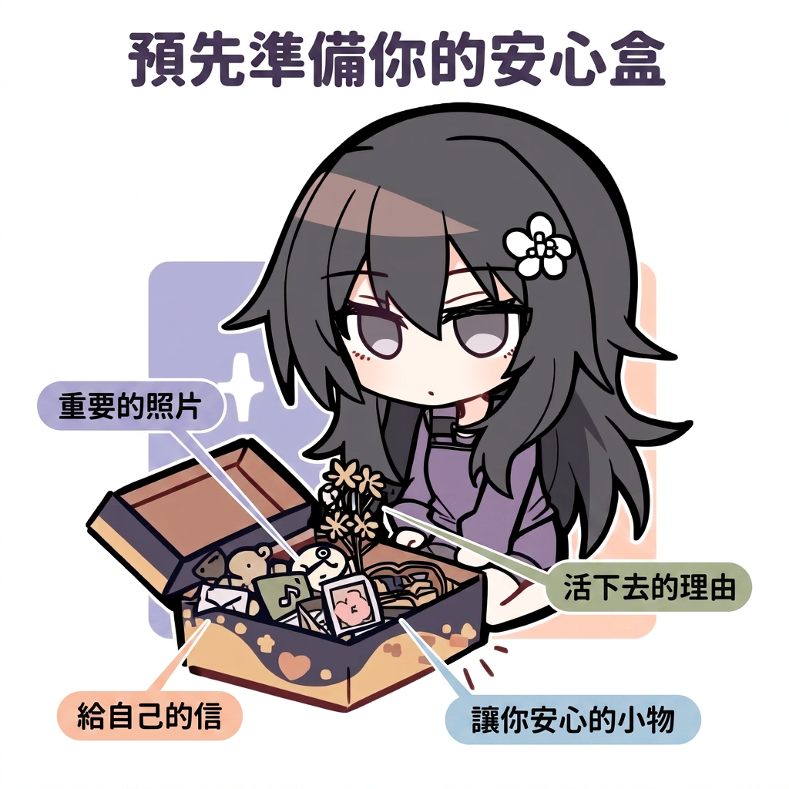
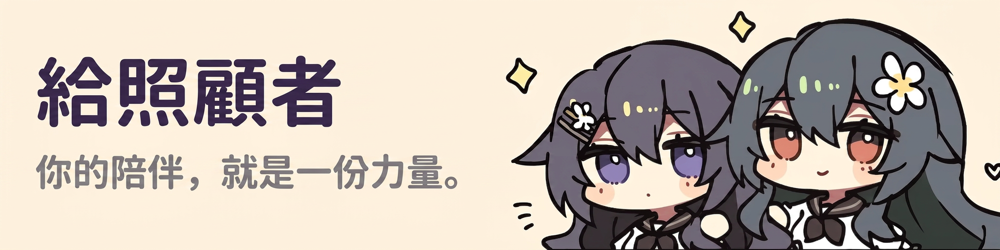
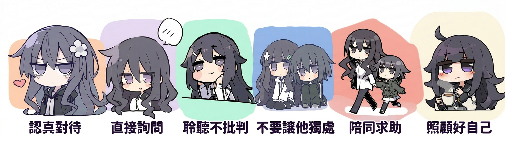

如果你或你身邊的人正面臨即時危險，請不要猶豫，立即致電以下熱線，或前往就近醫院急症室。
💬 不想開口說話？「Open Up」提供 24 小時網上文字輔導服務，你可以用文字慢慢傾訴： www.openup.hk

當自殺的念頭很強烈時，最重要的是先撐過此刻。這些是你可以自己一個人做的事，幫助你度過情緒的高峰。你不需要先處理所有問題——只需要安全地渡過現在這一刻。

衝動會過去。答應自己：「接下來一小時，我不會做任何事。」時間到了，再延長一小時。強烈的自殺衝動通常在 20–30 分鐘內達到頂峰，然後慢慢退去。你隨時可以決定，但不是現在——先撐過今晚。
把藥物、利器等可能傷害自己的物品鎖起來、交給別人保管，或暫時拿走、丟棄。讓危險的方法變得不容易拿到，能爭取寶貴的緩衝時間——這是最有效的自我保護之一。可以請藥房改為每週配藥，而非一次過大量。
用冰敷臉頰、沖冷水洗臉，或洗一個冷水澡。強烈的冷刺激能快速「重設」激動的神經系統，讓你較容易思考。也可以試試節律呼吸或激烈運動（TIPP 技巧）。
在情緒平靜時，預先準備一個「安心盒」：放入重要的照片、給自己的信、活下去的理由、讓你安心的小物。痛苦時打開它，提醒自己：這一刻會過去，而你值得被好好對待。
試試 5-4-3-2-1 grounding（說出 5 樣看見的、4 樣聽見的、3 樣摸到的、2 樣聞到的、1 樣嚐到的東西）。把腦海中的想法寫在紙上。避免酒精和藥物——它們會減弱自制力、加重衝動。也可以用五感安撫照顧自己。
你不需要獨自承受。可以致電上方的 24 小時求助熱線，或使用「Open Up」網上文字輔導——你甚至不需要開口說話，用文字慢慢說就可以。對方不會批評你，只會陪伴你。

在你狀態較好的時候，動手準備一個屬於你的安心盒。當痛苦來襲、腦袋一片混亂時，你未必想得起活下去的理由——這個盒子會替你記得。放入任何能提醒你「我很重要、這一刻會過去」的東西。

當你關心的人正受自殺念頭困擾，你可能會感到害怕、無助、不知所措。這些反應都很正常。你不需要「說對每一句話」——你的在場與關心，本身就是重要的支持。

認真看待每一個求救訊號，不要當作「只是說說而已」或「想引人注意」。當有人透露想結束生命，這往往是他們在用盡力氣發出求救。
直接、溫和地問：「你是否有想過傷害自己，或結束自己的生命？」很多人擔心問了會「把念頭植入對方腦中」——研究顯示並不會。直接詢問反而讓對方感到被理解，鬆一口氣。
耐心聆聽，不批評、不說教、不急於給建議或「講道理」。不要說「你想太多了」或「你要堅強」。讓他知道：他的痛苦被聽見、被接納。有時候，被理解本身就是一種釋放。
在危機時刻，盡量陪伴在側，不要讓他獨自一人。同時，溫和地協助移走身邊可能造成傷害的物品（如藥物、利器）。
協助他聯繫專業協助，或陪同前往急症室。你的陪伴讓求助變得不那麼可怕。如情況緊急，立即致電 999。記下上方的求助熱線，需要時隨時可用。
照顧一個處於危機的人非常耗心力。你也需要被照顧。記得讓自己休息、向信任的人傾訴、尋求支援。你不需要獨自承擔這一切——照顧好自己，才能走得更遠。
本頁面為教育及自助參考資料，並不能取代專業的醫療或心理健康評估與治療。
如果你或你身邊的人正面臨即時危險，請立即致電 999，或前往就近醫院急症室求助。
這裡的方法旨在幫助你撐過困難的時刻，但不應取代與你的醫生、治療師或危機支援服務的聯繫。如情緒持續困擾，請盡快尋求專業協助。
你的生命很重要。尋求幫助，是堅強的表現。🌱